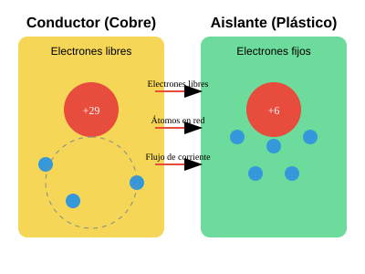
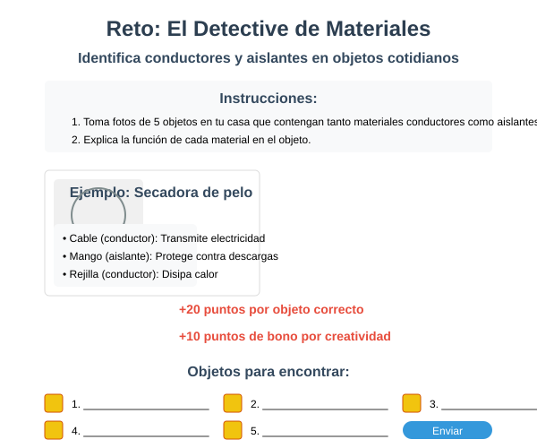

Objetivo específico
Al finalizar esta sesión, los estudiantes podrán diferenciar entre materiales conductores y aislantes, identificando ejemplos de cada uno en su entorno cotidiano.
Contenido teórico
Los materiales se clasifican según su capacidad para conducir la electricidad:
Materiales conductores
Permiten el flujo de corriente eléctrica debido a que sus electrones pueden moverse libremente.
- Metales como cobre, aluminio, plata y oro
- Electrolitos en solución (agua salada, ácidos)
- Grafito (presente en lápices)
Materiales aislantes
Resisten el flujo de corriente eléctrica, manteniendo los electrones fuertemente unidos a sus átomos.
- Plásticos (PVC, teflón)
- Vidrio
- Caucho
- Madera seca
- Cerámica
Ejemplo visual
Imagina que los electrones son como agua fluyendo por tuberías:
- Los conductores son como tuberías anchas que permiten el paso fácil del agua
- Los aislantes son como paredes gruesas que impiden el paso del agua
Recurso SVG interactivo: Ver simulación de conductividad
Actividad práctica: Caza del tesoro eléctrico
Materiales necesarios: Pila de 9V, bombilla pequeña, cables con pinzas cocodrilo, diferentes materiales para probar (moneda, llave, lápiz, goma, etc.)
Instrucciones:
- Arma un circuito simple con la pila, la bombilla y los cables
- Deja un espacio en el circuito donde colocarás los materiales a probar
- Prueba cada material y anota si la bombilla enciende (conductor) o no (aislante)
- Completa la tabla de clasificación
| Material | Conductor | Aislante |
|---|---|---|
| Moneda | ||
| Lápiz de madera | ||
| Clip metálico |
Pregunta de reflexión
¿Por qué crees que los cables eléctricos están hechos de cobre (conductor) pero recubiertos de plástico (aislante)? ¿Qué podría pasar si se invirtieran estos materiales?
Recursos visuales sugeridos
Estructura atómica de conductores y aislantes

Observa las diferencias en la estructura atómica que hacen que unos materiales conduzcan la electricidad y otros no.
Conductores y aislantes en el hogar

Identifica los materiales conductores y aislantes en los electrodomésticos de tu hogar.
Simulador de conductividad
🔌 Simulador interactivo
Explora cómo diferentes materiales afectan el flujo de corriente eléctrica.
Abrir simuladorReto gamificado: El detective de materiales
Instrucciones:
- Busca en tu casa 5 objetos que contengan tanto materiales conductores como aislantes.
- Toma fotos de cada objeto y márcalos para mostrar las partes conductoras y aislantes.
- Explica la función de cada material en el objeto.
- ¡Gana puntos por cada identificación correcta y por creatividad!
🏆 Puntuación:
- 20 puntos por objeto correctamente identificado
- 10 puntos de bono por creatividad
